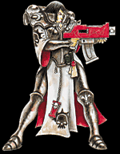
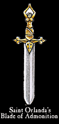

Imperial Forces |
Force Disposition Introduction |
Ork Forces |
|
 Though the main bulk of their forces have been assigned to the Fire Wastes, the Order of the Argent Shroud has been spread throughout almost every war zone on Armageddon. Though Imperial commanders often view allied squads from the Order with some suspicion in between battles, the Sisters have already proved to be staunch defenders against the invading Orks. Their sheer faith in the divine Emperor has been decisive in several engagements. Battered and dispirited Guardsmen have been given new heart as the Sisters refuse to give ground under ferocious Orks assaults and within the Hives, the impassioned words of resistance spoken by the Sisterhood has steadied the resolve of entire populations. Canoness Carmina has pledged her strength to the Order of Our Martyred Lady in the vow to retake the desecrated Arch-Abbey within Tempestora Hive. Many Sisters of the Argent Shroud fight alongside those of Our Martyred Lady, determined to bring the full fury of the Emperor upon the enemy who treads upon sacred ground.
+++ Date: 2912999/M41
+++ Ref: Arm/55692234/ONJ
+++ By: General Kurov
+++ To: Commissar Yarrick
+++ Re: Force Dispositions, Fire wastes, Addendum
+++ Thought: We embody His Will.
|
| ||||||||||||||||||||||||||||||||||||||||||||||||||||||||
|
 As we are all aware, the Order of the Argent Shroud are renowned for their mandate of regulating the activities of not just members of the Ecclesiarchy, but of other Imperial organisations they come into contact with as well. Whilst I appreciate their dedication and success at rooting out traitors and dissenters within our midst, the effect upon the general morale of any fighting arm during their investigations almost always depreciates as their purges continue. We may be fortunate that incumbent Canoness Carmina is a little less zealous than her predecessors, particularly where the Adeptus Astartes are concerned. I recommend you consult Imperial record Ref: Jan/44698822/SMG regarding the attacks on the forward bases of the Angels Vermillion whilst the Order was under the leadership of Canoness Dissenta. With the bulk of our forces committed to Armageddon Prime and Secundus, the deployment of the Order in the Fire Wastes should greatly reduce friction between our forces, especially as Canoness Carmina has in the past deferred to some of the Space Marine commanders who form the defence of the northern continent. During a past tour of the Diabolus factory complex, the Fabricator-Master impressed upon me the importance of a continued source of mineral ores for his machine shops. As most raw materials on Armageddon are mined in the Fire Wastes, it is imperative that we do not get distracted by the intense fighting that that is even now beginning in Prime and Secundus. To this end, the addition of four entire companies of the Adepta Sororitas should prove to be a considerable asset in the Fire Wastes. Now the Third Armageddon War has started in earnest, the Order of the Argent Shroud will be concentrating more upon defeating the Ork invaders than governing our own forces. In spite of the reputation that often precedes them in extended campaigns, the Order is a fine fighting organisation that will provide a solid back bone for the rest of our armies in the Fire Wastes. Yours, in the defence of the Imperium, General Kurov | |||||||||||||||||||||||||||||||||||||||||||||||||||||||||